Drafts only. Loop widths: far 336, middle A 352, middle B 368, near 384 pixels. The yellow ticks above the pictures mark the join; they are not part of the art. See README.md and numbers.txt.
Far plane, loop width 336 pixels
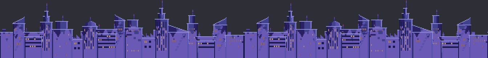
Middle A plane, loop width 352 pixels
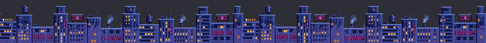
Middle B plane, loop width 368 pixels
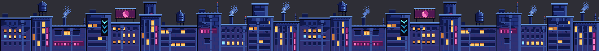
Near plane, loop width 384 pixels
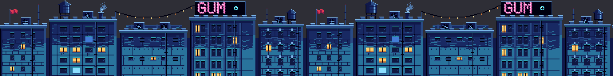
Camera at 0 pixels
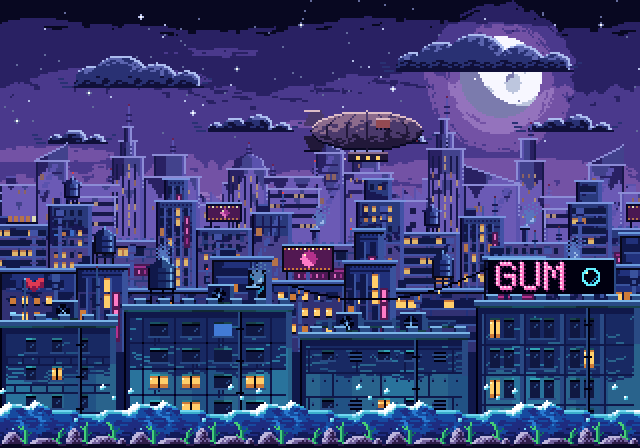
Camera at 96 pixels
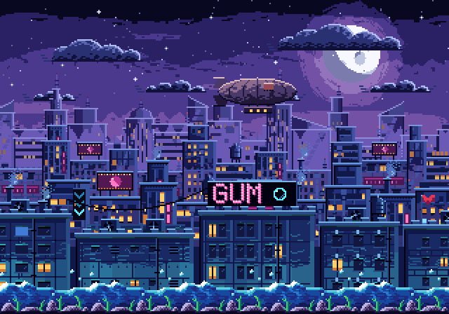
Camera at 153840 pixels, every join near the centre
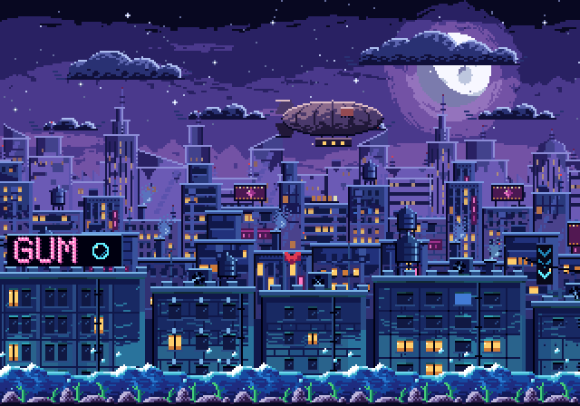
Camera moves 1 pixel per frame at 20 milliseconds per frame. Far, middle A and middle B move at their parallax speeds (quarter, half and three quarters) over the sky; all three joins pass the centre halfway through.
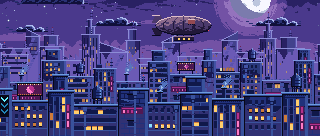
Far plane, loop width 336 pixels
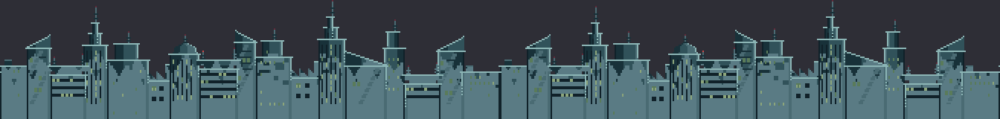
Middle A plane, loop width 352 pixels
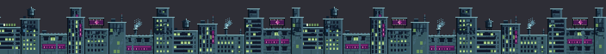
Middle B plane, loop width 368 pixels
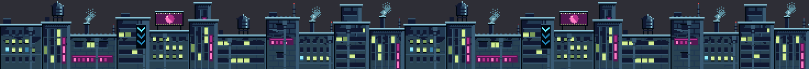
Near plane, loop width 384 pixels
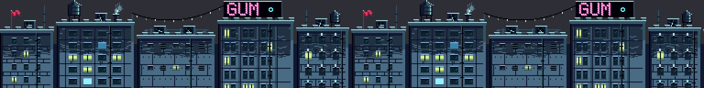
Camera at 0 pixels
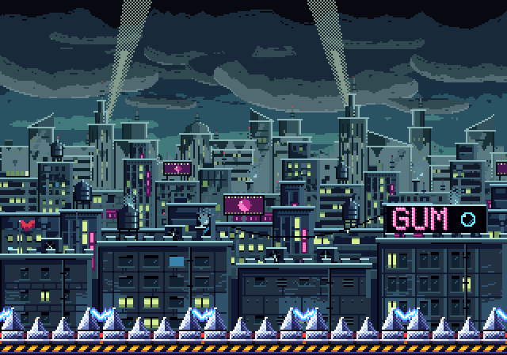
Camera at 96 pixels
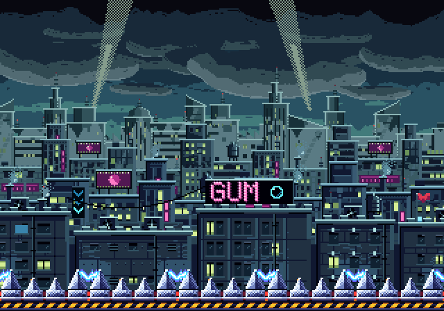
Camera at 153840 pixels, every join near the centre
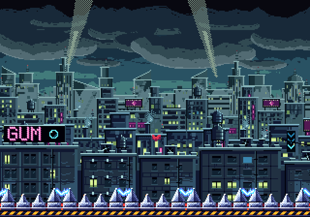
Camera moves 1 pixel per frame at 20 milliseconds per frame. Far, middle A and middle B move at their parallax speeds (quarter, half and three quarters) over the sky; all three joins pass the centre halfway through.
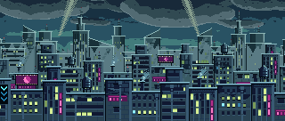
Far plane, loop width 336 pixels
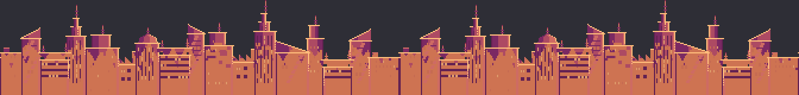
Middle A plane, loop width 352 pixels
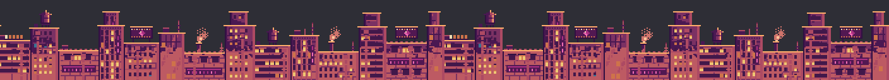
Middle B plane, loop width 368 pixels
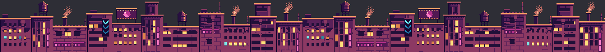
Near plane, loop width 384 pixels
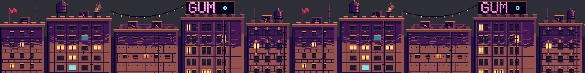
Camera at 0 pixels
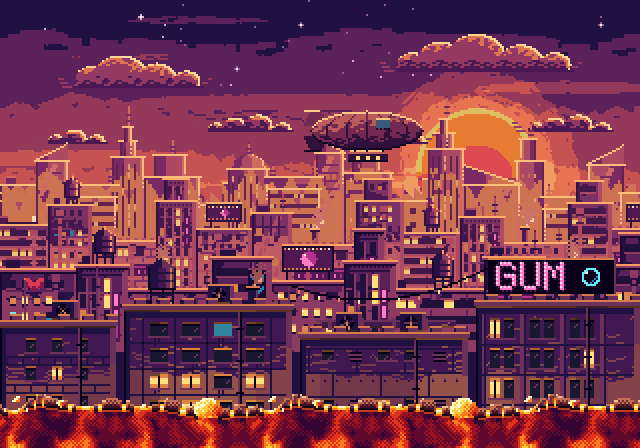
Camera at 96 pixels
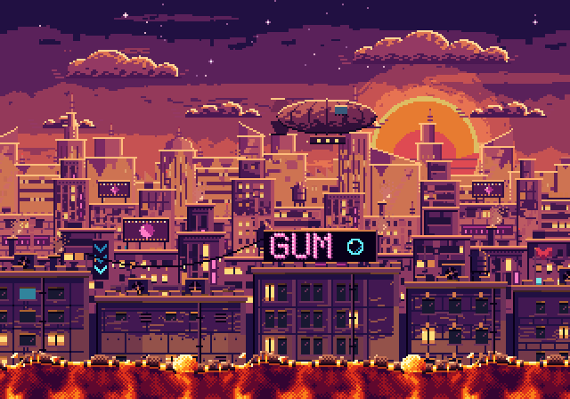
Camera at 153840 pixels, every join near the centre
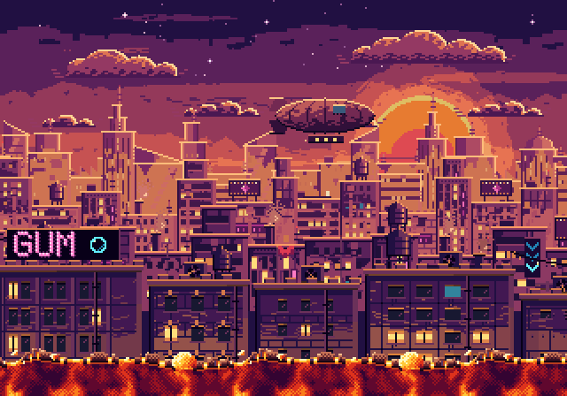
Camera moves 1 pixel per frame at 20 milliseconds per frame. Far, middle A and middle B move at their parallax speeds (quarter, half and three quarters) over the sky; all three joins pass the centre halfway through.
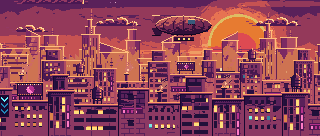
Transparent colour magenta 255, 0, 255. Colours on the 5-bit grid.
Clear night, moon, sky
Clear night, moon, far
Clear night, moon, midA
Clear night, moon, midB
Clear night, moon, near
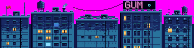
Storm, rain and search beams, sky
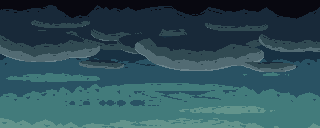
Storm, rain and search beams, far
Storm, rain and search beams, midA
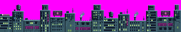
Storm, rain and search beams, midB
Storm, rain and search beams, near
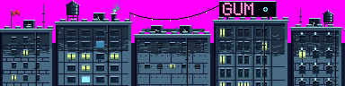
Ember dusk, low sun, sky
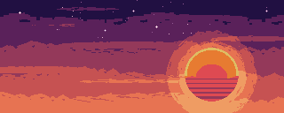
Ember dusk, low sun, far
Ember dusk, low sun, midA
Ember dusk, low sun, midB
Ember dusk, low sun, near
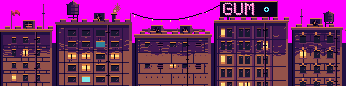